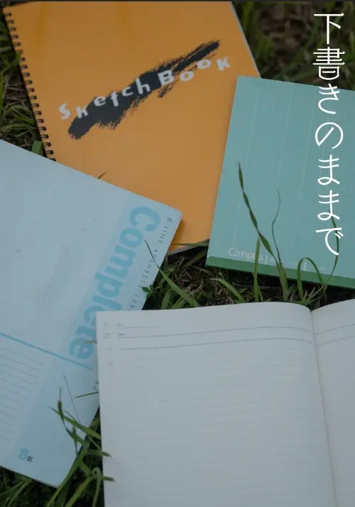
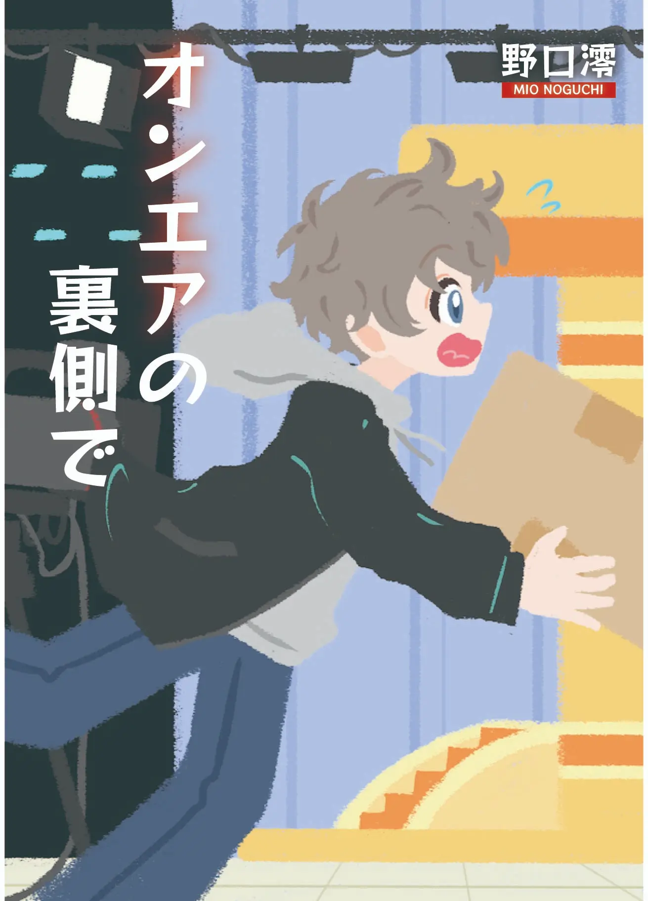

作家名として「野口澪」名義で活動。映像制作の分野を中心に活動してきた視点を活かし、情景が鮮やかに思い浮かぶ描写を追求している。初めて執筆した小説『名古屋駅の底』が、Web小説サイト「カクヨム」主催の「カクヨム甲子園2025」にて最終選考作品に選出され注目を集める。

下書きのままで
どんな幼少期を過ごし、なぜ画面の向こう側の世界である動画編集に惹かれたのか。何を夢として追いかけ、そして表現の交差点に立つ今、何を思っているのか。映像と文章、2つの視点を行き来しながら紡がれたのは、自身の原点とこれからを鮮やかに切り取った等身大の言葉たち。何気ない日常のカットから見つけ出した、自分だけの「言葉と情景」を綴る一冊。

オンエアの裏側で
名古屋のテレビ局で働く新人ADの高橋賢人は、ロケ先の喫茶店で、毎回コーヒーを半分だけ残す老紳士と出会う。しかし、彼は突如姿を消してしまう。理由が気になる高橋は、街で見かけたわずかな手がかりをおって走り始める。新米テレビマンがたどり着いた切なくも温かい真実とは。日常の謎を解き明かすお仕事ミステリー。